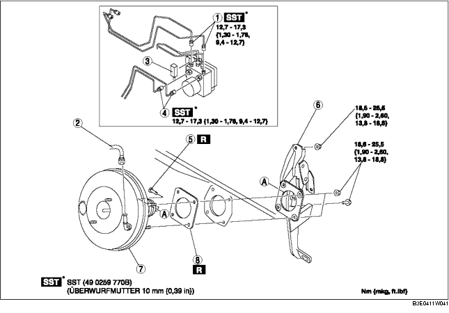

1. Die Batterie und den Batterieträger ausbauen. (Siehe BATTERIE AUSBAUEN/EINBAUEN [ZJ, Z6].) (Siehe BATTERIE AUSBAUEN/EINBAUEN [LF].)
2. Hauptbremszylinder ausbauen. (Siehe HAUPTBREMSZYLINDER AUSBAUEN/EINBAUEN.)
3. Den Steckverbinder des Bremsschalters ausbauen.
4. Das Gaspedal ausbauen. (Siehe BREMSPEDAL AUSBAUEN/EINBAUEN.)
5. Gemäß der Reihenfolge in der Tabelle ausbauen.
6. Der Einbau erfolgt in umgekehrter Reihenfolge.
7. Bremspedal prüfen. (Siehe BREMSPEDAL PRÜFEN.)
8. Den Gaszug einstellen. (Siehe GASZUG PRÜFEN/EINSTELLEN [ZJ, Z6].) (Siehe GASZUG PRÜFEN/EINSTELLEN [LF].)

.
|
1
|
Bremsleitung
|
|
2
|
Unterdruckschlauch
(Siehe UNTERDRUCKSCHLAUCH AUSBAUEN/EINBAUEN.)
|
|
3
|
Steckverbinder
(Siehe Ausbauhinweis für Steckverbinder.)
|
|
4
|
Bremsleitung
|
|
5
|
Verbindungsstift
(Siehe BREMSPEDAL AUSBAUEN/EINBAUEN.)
|
|
6
|
Bremspedal, komplett
(Siehe Ausbauhinweis für Bremspedal.)
|
|
7
|
Bremskraftverstärker
|
|
8
|
Dichtung
|
1. Die Montageschrauben und -muttern des Bremspedals entfernen.
2. Den Bremskraftverstärker in Richtung Fahrzeugheck bewegen.
3. Das Bremspedal ausbauen.